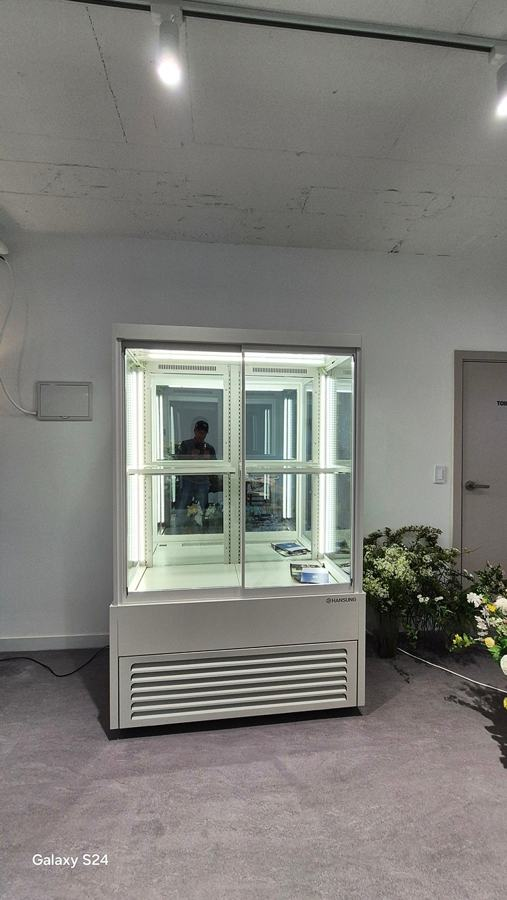
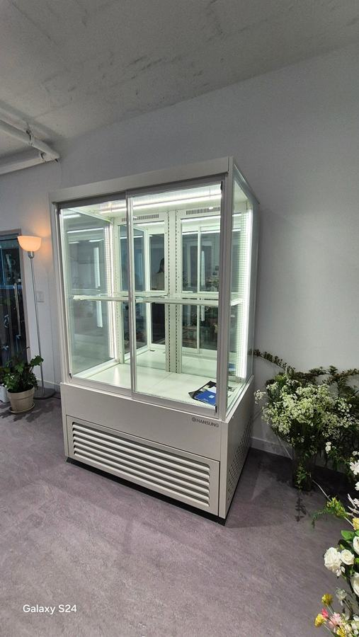
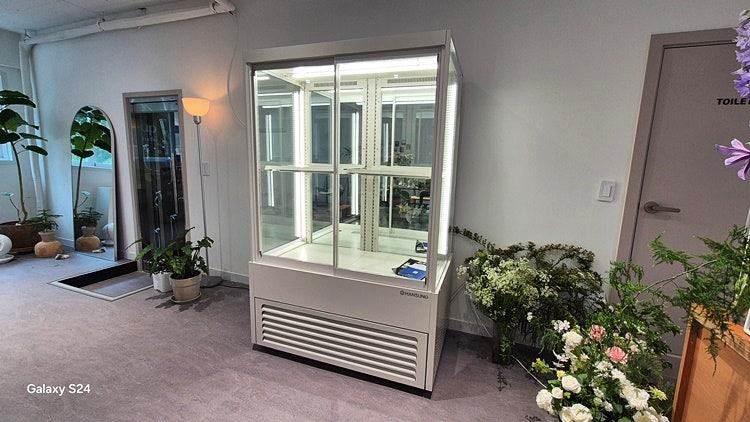
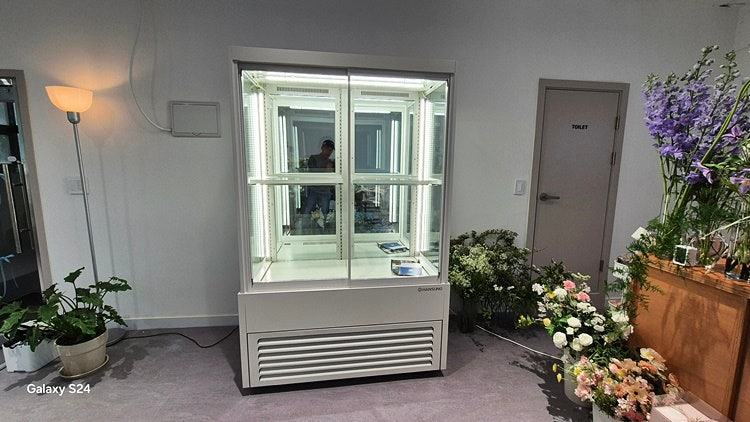
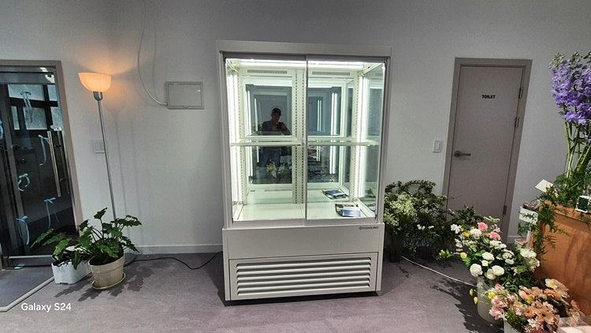
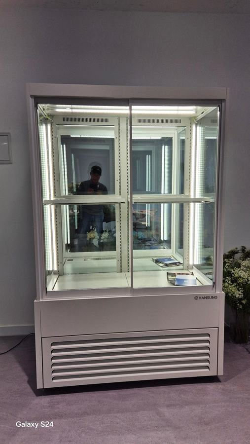
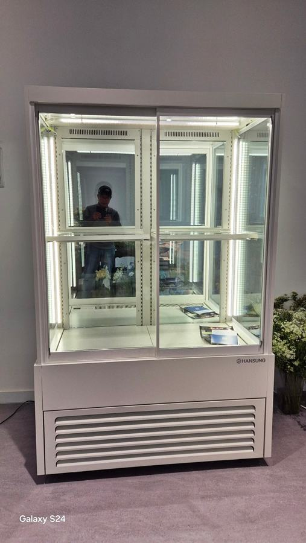

과일진열쇼케이스
과일쇼케이스 고르는법, 비교할 때 놓치기 쉬운 부분

과일쇼케이스는 진열할 과일이 마르기 쉬운지, 눌리면 상하는지부터 따져 냉기 흐름·습도·선반 구조를 고르고, 그다음 과일 색을 살리는 조명과 매장 동선에 맞는 형태를 정하시면 됩니다. 크기와 금액만 비교하면 이런 차이가 견적서에 드러나지 않습니다.
안녕하세요. 과일가게와 청과 코너에 맞춘 진열 쇼케이스를 제작하는 한성쇼케이스입니다.
과일가게 사장님들은 매일 새벽 시장에서 좋은 물건을 골라 오시는데, 오후만 되면 딸기 꼭지가 시들고 포도 알이 탄력을 잃는다는 고민을 많이 하십니다.
진열대 문제인지 과일 문제인지 헷갈리기도 하죠.
과일은 수확한 뒤에도 숨을 쉬는 상품입니다. 그래서 같은 냉장 진열대라도 냉기를 어떻게 돌리고 습기를 얼마나 지키느냐에 따라 판매할 수 있는 시간이 달라집니다.
오늘은 과일쇼케이스를 비교하실 때 특히 놓치기 쉬운 부분을 하나씩 짚어 보겠습니다.
1. 과일마다 다른 약점부터 정리
딸기, 체리, 블루베리처럼 껍질이 얇은 과일은 마른 바람에 약하고, 복숭아나 망고는 눌린 자리가 금방 멍듭니다.
사과나 배처럼 단단한 과일은 상대적으로 덜 예민하지만 표면 광택이 죽으면 신선해 보이지 않습니다.
가게에서 가장 많이 파는 과일 몇 가지의 약점을 먼저 적어 두면, 어떤 냉각 구조와 선반이 필요한지 기준이 생깁니다.
계절마다 주력 과일이 바뀌는 가게라면 한 계절에만 맞춘 구성보다 칸 높이나 선반을 바꿀 수 있는 구조가 오래 쓰기 좋습니다.
- 계절별 주력 과일을 적어 보세요.
- 마르기 쉬운 과일과 눌리기 쉬운 과일을 나눠 보세요.
2. 냉기 흐름과 습도 유지
찬바람이 과일에 직접 세게 닿는 구조라면 껍질 얇은 과일은 금방 쭈글해집니다. 냉기가 칸 전체에 부드럽게 퍼지는지, 위아래 칸 온도 차가 크지 않은지 샘플을 보며 확인해 보세요.
습도도 꼭 물어보셔야 할 부분입니다. 냉장 공간은 기본적으로 건조해지기 쉬워서, 습도를 어떻게 유지하는지에 따라 과일 표면 상태가 달라집니다.
적정 온도와 습도는 과일 종류에 따라 다르니 주력 과일을 기준으로 상담받으시는 게 정확합니다.


3. 선반 기울기와 소재
과일쇼케이스는 손님 쪽으로 살짝 기울어진 선반을 많이 씁니다. 바구니와 팩이 앞으로 보이도록 진열하기 좋고, 매대가 풍성해 보이는 효과가 있습니다.
다만 기울기가 너무 크면 둥근 과일이 굴러 서로 부딪히니 턱이나 칸막이를 함께 계획해야 합니다.
선반 소재는 물기와 과즙을 닦아 내기 쉬운 것이 좋습니다. 무거운 수박이나 박스째 올리는 과일이 있다면 하단 선반 강도도 따로 확인해 두세요.
- 선반 앞쪽 턱이나 칸막이가 있는지 보세요.
- 하단 선반에 올릴 최대 무게를 알려 주세요.
4. 과일 색을 살리는 조명과 형태
과일은 색이 곧 맛의 인상입니다. 같은 사과도 조명에 따라 붉은빛이 탁해 보이기도 하고 선명해 보이기도 하니, 실제 과일을 넣고 조명 색을 비교해 보시길 권해 드립니다.
형태는 매장 동선에 맞춰 고릅니다. 손님이 직접 집어 가는 가게라면 앞이 트인 오픈형, 고가 선물용 과일을 두는 곳이라면 문이 달린 형태가 어울립니다.
출입구에서 바로 보이는 자리라면 높이를 낮춘 평대형으로 시야를 열어 두는 방법도 있습니다.
체크리스트
- 주력 과일별 약점(건조·눌림)
- 냉기 분산과 위아래 온도 차
- 습도 유지 방식
- 선반 기울기·턱·하중
- 실제 과일로 조명 색 확인
- 오픈형·도어형·평대형 선택
예민한 생물 상품 사례: 중고 냉장고에서 바꾼 파주 플라워샵
과일처럼 수확 뒤에도 살아 있는 상품을 다루는 꽃집의 사례입니다. 경기 파주에서 플라워샵과 클래스 공간을 함께 운영하시는 대표님은 처음에 중고 꽃냉장고를 쓰셨는데, 칸마다 온도 차가 나고 결로가 생겨 생화가 이틀을 버티지 못하는 일이 잦았다고 하셨습니다.
새로 설치한 제품은 공기층을 더한 페어글라스로 결로를 줄이고, 내부 냉기가 고르게 돌도록 설계했습니다.
매장 구조와 출입구 위치를 현장에서 실측한 뒤 자리를 잡았고, 이후 냉장 환경이 안정되면서 꽃이 더 오래 버티고 클래스 수강생들도 신선한 꽃을 보고 신뢰가 커졌다는 이야기를 들으셨다고 합니다.
칸별 온도 편차와 결로는 과일쇼케이스를 고를 때도 똑같이 확인해야 할 부분입니다.






자주 묻는 질문
과일쇼케이스는 오픈형과 도어형 중 무엇이 좋을까요?
손님이 직접 골라 담는 동네 과일가게라면 오픈형이 편합니다. 선물용 고급 과일을 오래 진열하거나 매장 냉방이 약한 곳이라면 도어형이 온도 관리에 유리합니다.
딸기와 사과를 한 쇼케이스에 같이 둬도 되나요?
가능하지만 과일마다 예민한 정도가 달라 칸을 나눠 배치하는 것이 좋습니다. 냉기가 세게 닿는 자리에는 단단한 과일을 두고, 껍질 얇은 과일은 바람이 덜 닿는 칸에 두세요.
매장 크기에 맞춰 제작할 수 있나요?
매장 폭과 깊이에 맞춰 길이, 단 수, 선반 기울기까지 맞춤 제작합니다. 실측 치수와 주력 과일을 알려 주시면 구성을 먼저 안내해 드립니다.
매장 조건에 맞춰 만드는 한성쇼케이스
원하시는 제품 사진과 설치할 공간 사진만 보내 주셔도 매장에 맞는 구성을 추천해 드립니다.
- 전국 240여 개 A/S 전담 센터 운영
- 본사 대량 자재 매입으로 품질 대비 합리적인 가격
- 유럽제·삼성 냉각 콤프레셔 적용
- 국내 최초 쇼케이스 전문 디자이너 상주
매장 폭과 원하는 진열 구성을 알려 주세요. 실측과 견적을 안내해 드립니다.
031-986-2458